Piano y teclado
Lectura musical, coordinación y acompañamiento.
Clases de música en Leganés para niños, jóvenes y adultos. En Siete Notas ofrecemos formación musical personalizada en batería, guitarra, piano, violín y canto, con clases individuales o grupales adaptadas al ritmo de cada alumno.
Aprende técnica, ritmo, oído musical y expresión artística en un entorno cercano, creativo y motivador.
Clases individuales
Clases grupales
Franjas de 45 min a 1 h
Instrumentos y canto
La música ayuda a desarrollar concentración, memoria, sensibilidad, coordinación y creatividad. En nuestras clases trabajamos tanto la técnica como la confianza para que cada alumno disfrute aprendiendo.
En Siete Notas adaptamos la formación musical al nivel, edad y objetivo de cada persona. Puedes empezar desde cero, reforzar conocimientos o avanzar con un instrumento de forma más personalizada.
Lectura musical, coordinación y acompañamiento.
Acordes, ritmo, técnica y canciones adaptadas al nivel.
Respiración, afinación, expresión y seguridad escénica.
Ritmo, independencia, coordinación y práctica musical.
16:30 - 20:30
16:30 - 20:30
16:30 - 19:30
Según disponibilidad
Según nivel
La música en Siete Notas se aprende de una forma cercana, práctica y adaptada. Ofrecemos clases orientadas a niños, jóvenes y adultos que quieren empezar desde cero, retomar un instrumento o mejorar técnica, lectura, oído y expresión musical.
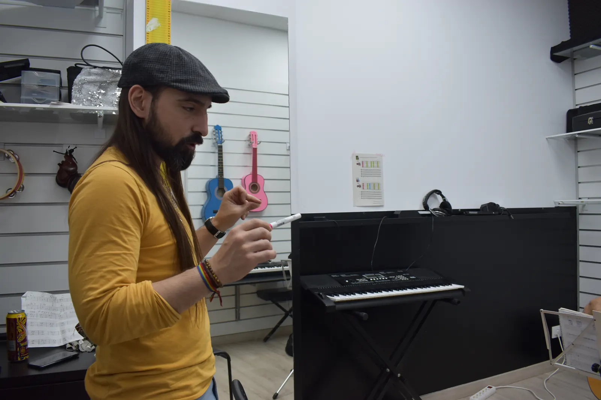
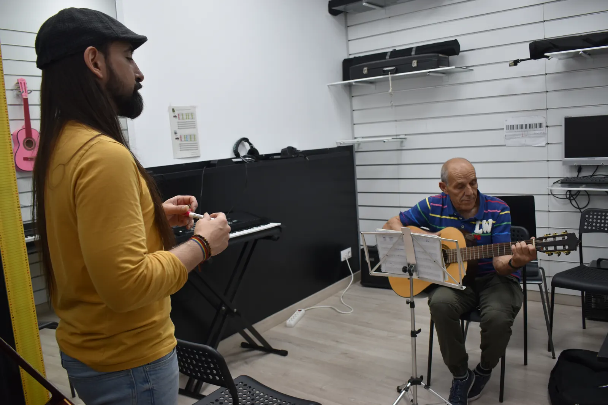
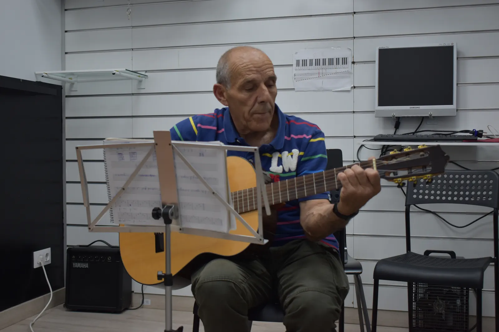
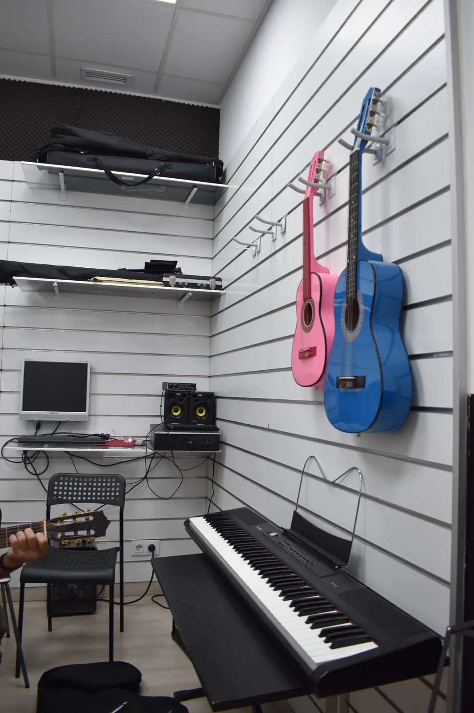
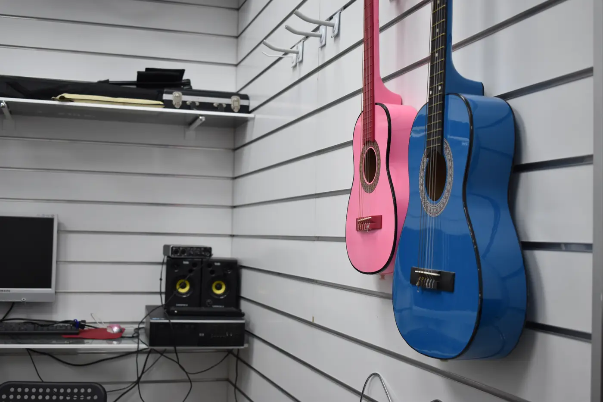

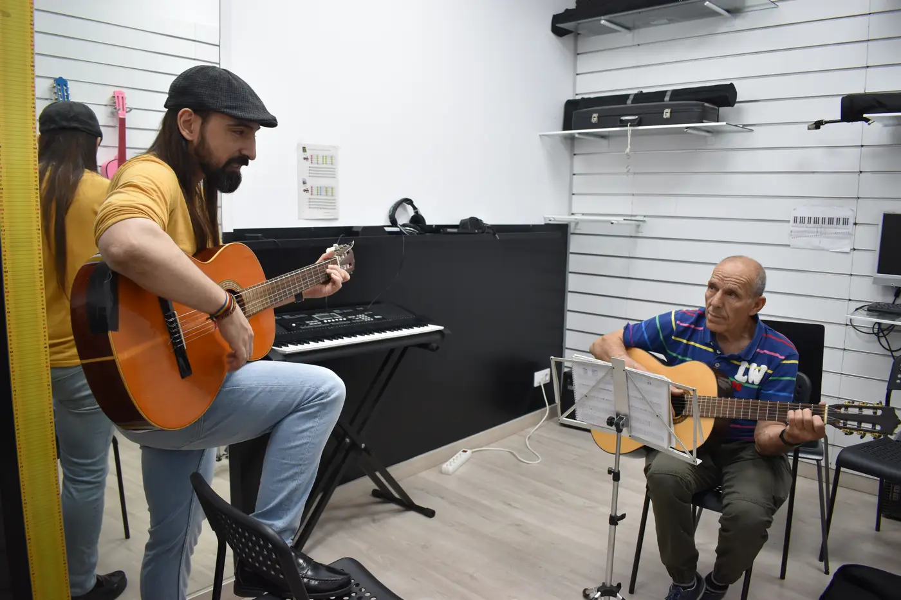

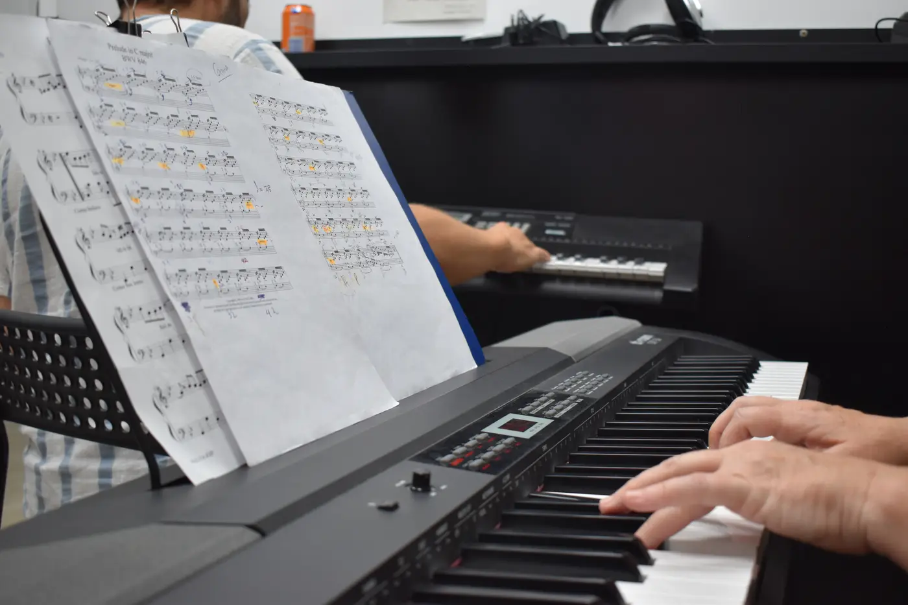
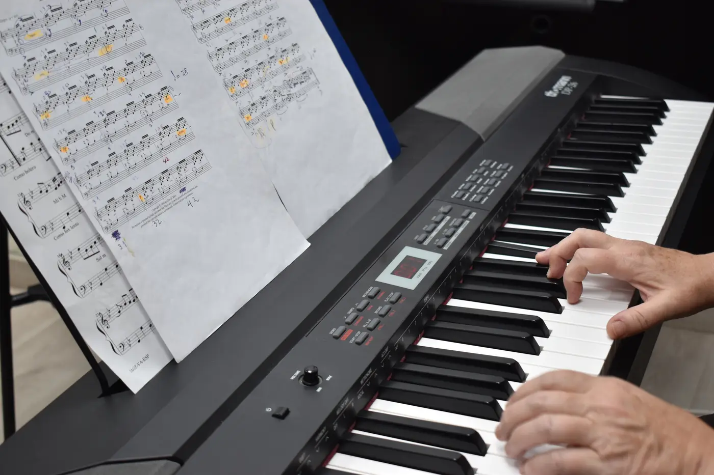

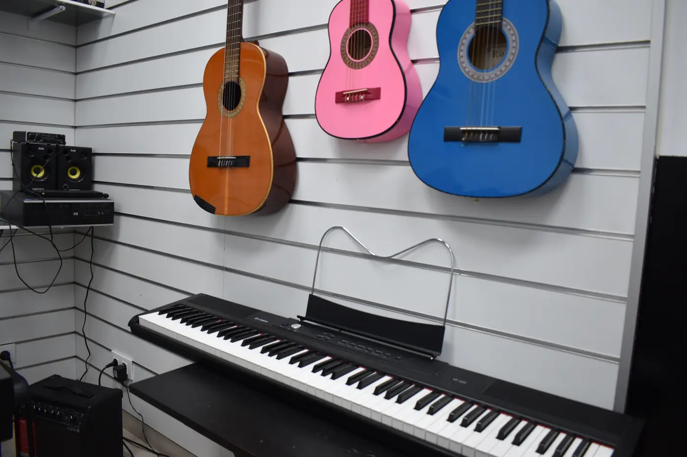
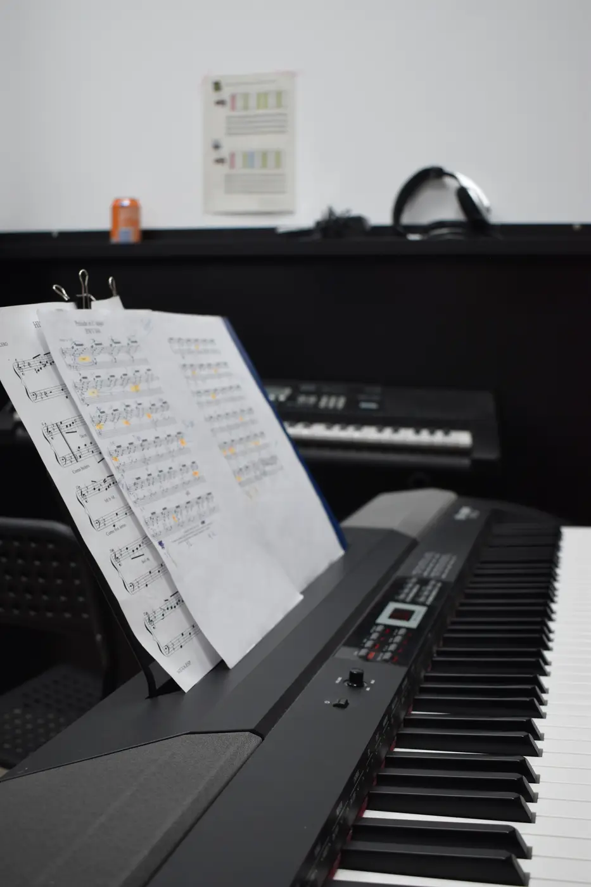
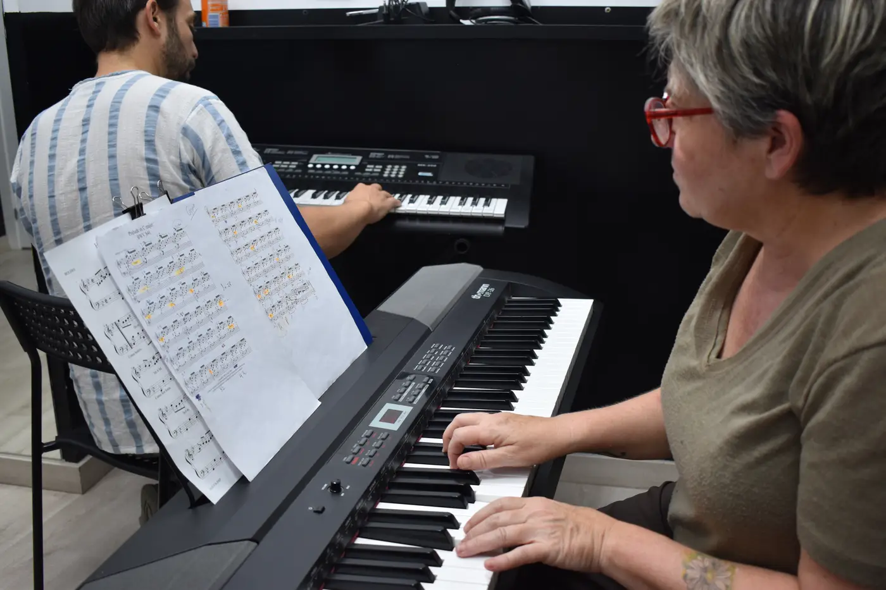
Piano, guitarra, batería, canto y formación musical según disponibilidad y objetivo.
Elige una modalidad que se adapte a tu ritmo, nivel y forma de aprender.
Combinamos técnica, lectura, oído y canciones para que notes avances reales.
Profesores que acompañan el proceso con paciencia, motivación y objetivos claros.
Las clases combinan explicación, práctica, corrección y acompañamiento. La idea es que cada persona se sienta cómoda, pueda preguntar y avance con una estructura clara.
Entrenamos oído, pulso y atención musical.
Trabajamos postura, digitación, respiración o coordinación.
Aplicamos lo aprendido en piezas y canciones.
Marcamos objetivos realistas para continuar avanzando.
Si buscas clases de música en Leganés, escuela de música en Leganés, guitarra, piano, batería, canto y formación musical personalizada. en Leganés, en Siete Notas te orientamos según edad, nivel, objetivos y disponibilidad.
Solicitar informaciónSí. Las clases se adaptan al nivel inicial y al instrumento que quieras aprender.
Sí. Muchos adultos empiezan o retoman música con clases personalizadas y objetivos flexibles.
Puedes preguntar por piano, guitarra, canto, batería y otras opciones disponibles en el centro.
Te orientamos según edad, experiencia previa, disponibilidad horaria y objetivo personal.
Sí. Muchas actividades cuentan con niveles de iniciación y grupos adaptados.